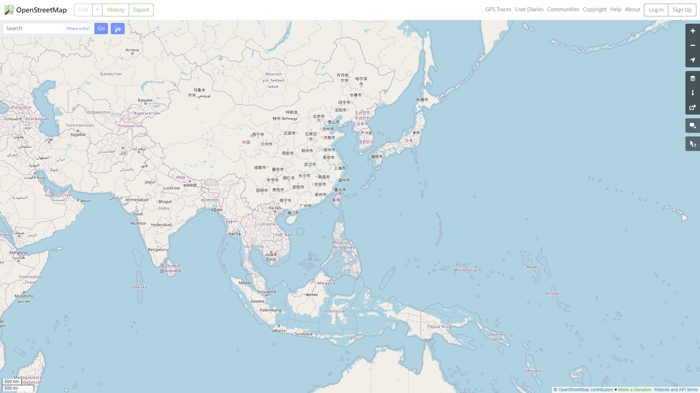

重新認識世界 20240121
2024-01-21

從 OpenStreepMap 上擷取的台灣附近的區域的地圖
參考資料
整理一些參考資料連結
小結
選舉結束之後，覺得想以某種形式重新理解一下世界的事物，也許不見得會有什麼用，但做為自娛的方式也許不錯？
#重新理解世界
備註： 2024-01-21 開始寫。
老翰的 TRPG 筆記
從 OpenStreepMap 上擷取的台灣附近的區域的地圖
整理一些參考資料連結
選舉結束之後，覺得想以某種形式重新理解一下世界的事物，也許不見得會有什麼用，但做為自娛的方式也許不錯？
#重新理解世界
備註： 2024-01-21 開始寫。